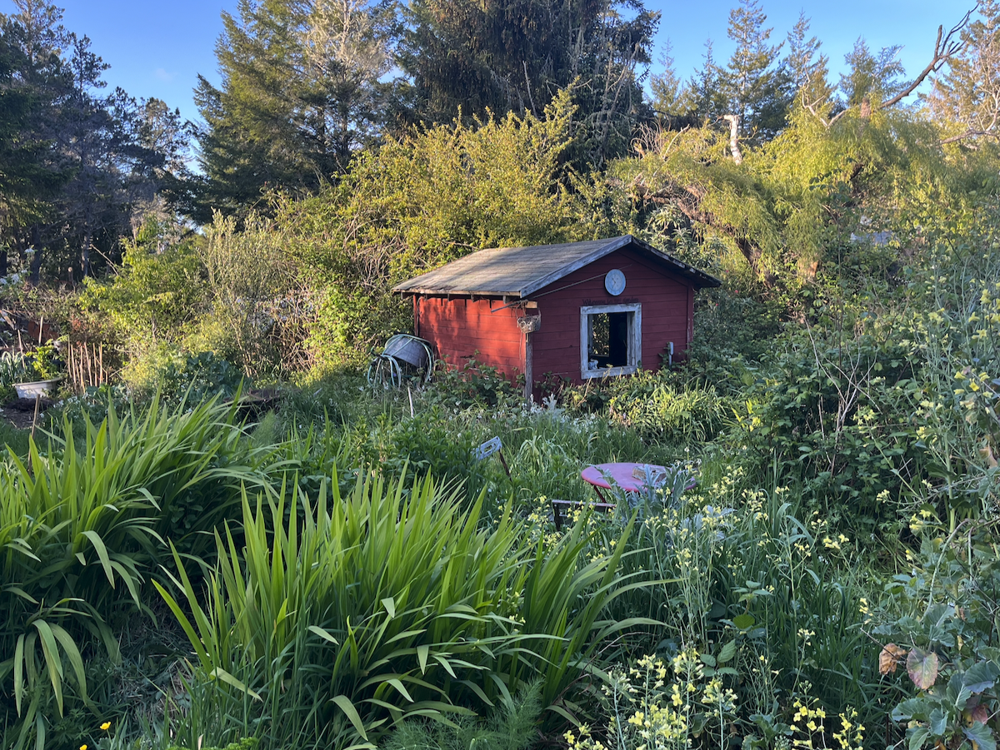

Regenerative concepts for people who tend to the land
Connecting homesteaders and intelligence to build resilient, community-minded systems that nourish the earth. A suite of tools and ideas for those who tend the land, share knowledge with neighbors, and seek harmony between technology and nature.
Technology should serve the land and those who care for it, not extract from them. We cultivate lifestyles, ideas and tools that strengthen community bonds, respect privacy, and work in harmony with natural systems.
- Earth-Centered — Tools that help us listen to and nourish the land.
- Community-Owned — Open source, open hardware, shared knowledge.
- Resilient — Works offline, runs locally, built resourcefully to last.
- Slow — Technologies inspired by nature's slowness that respect our time and attention.